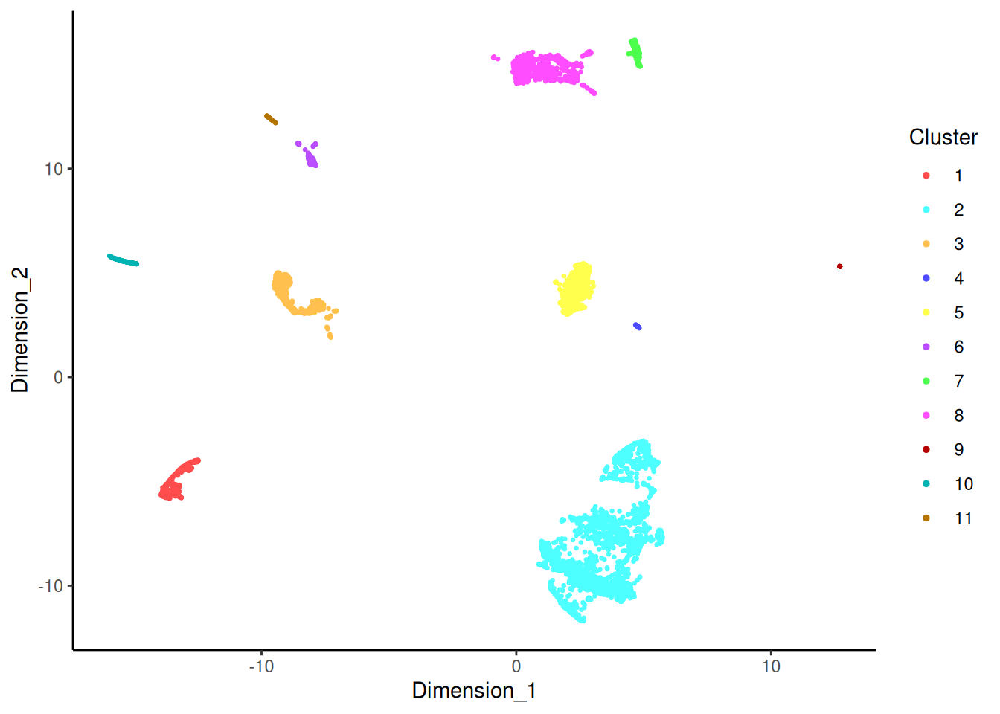
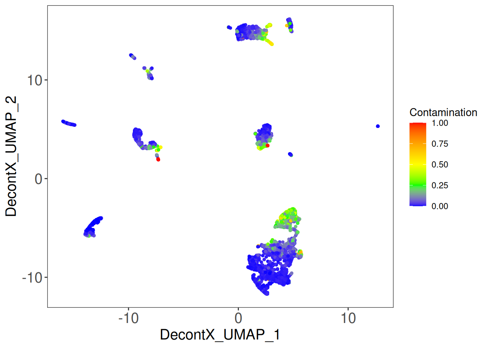
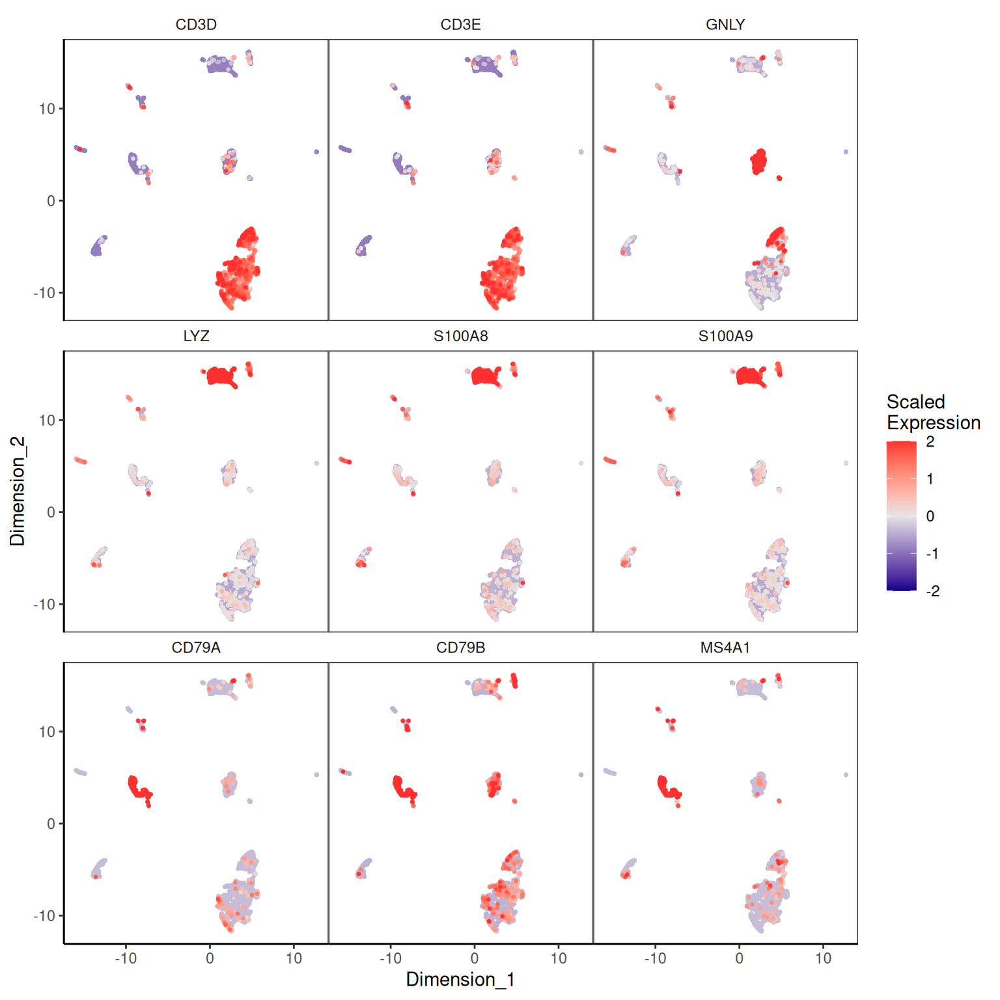
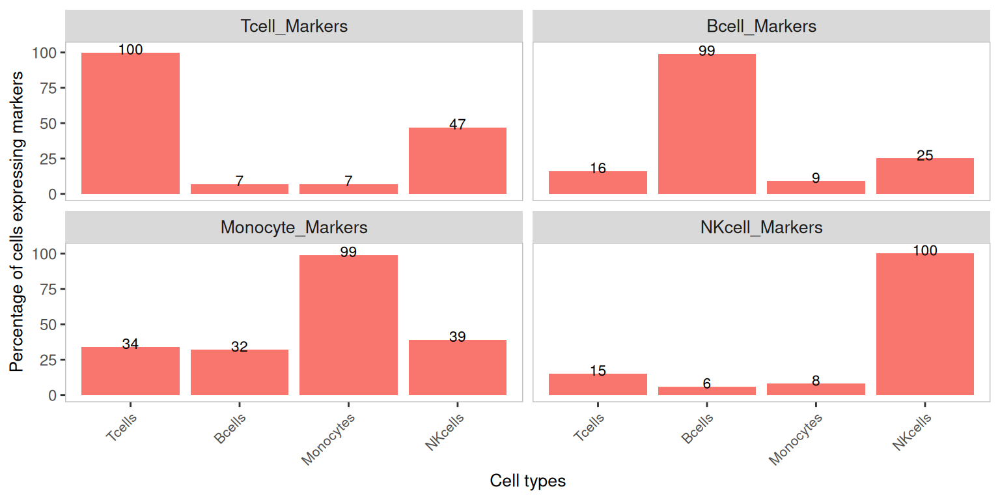
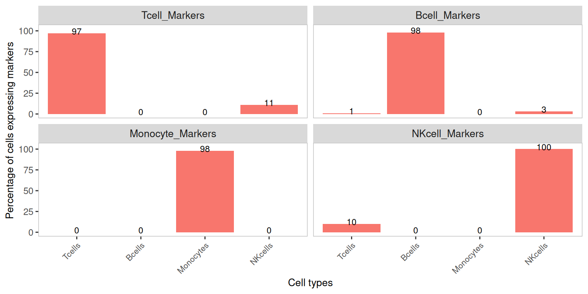
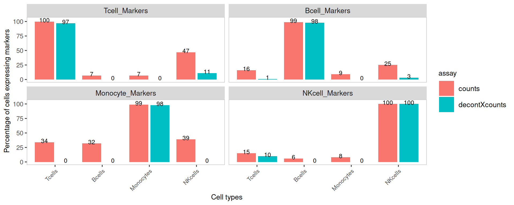
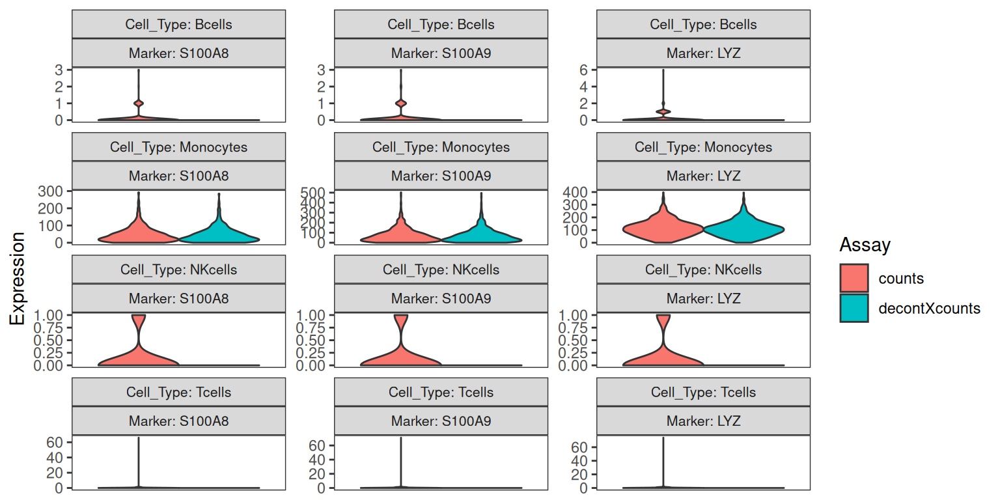
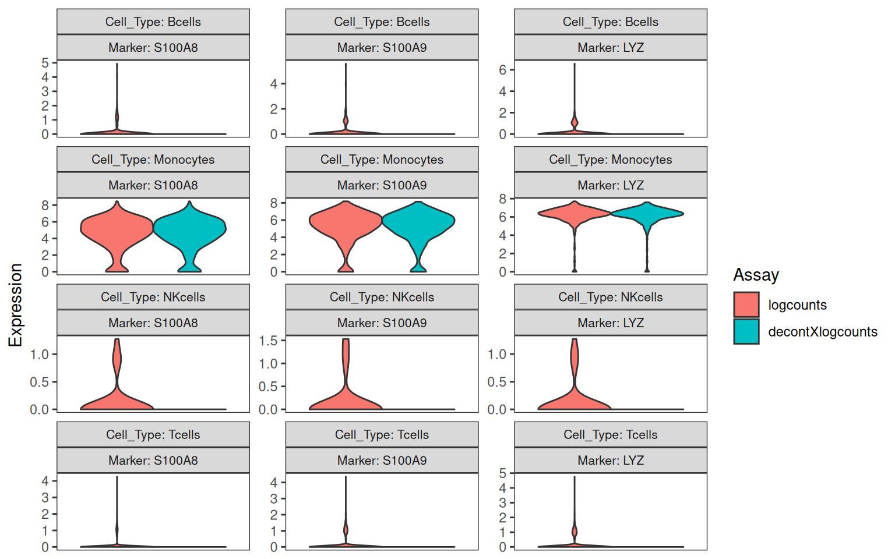
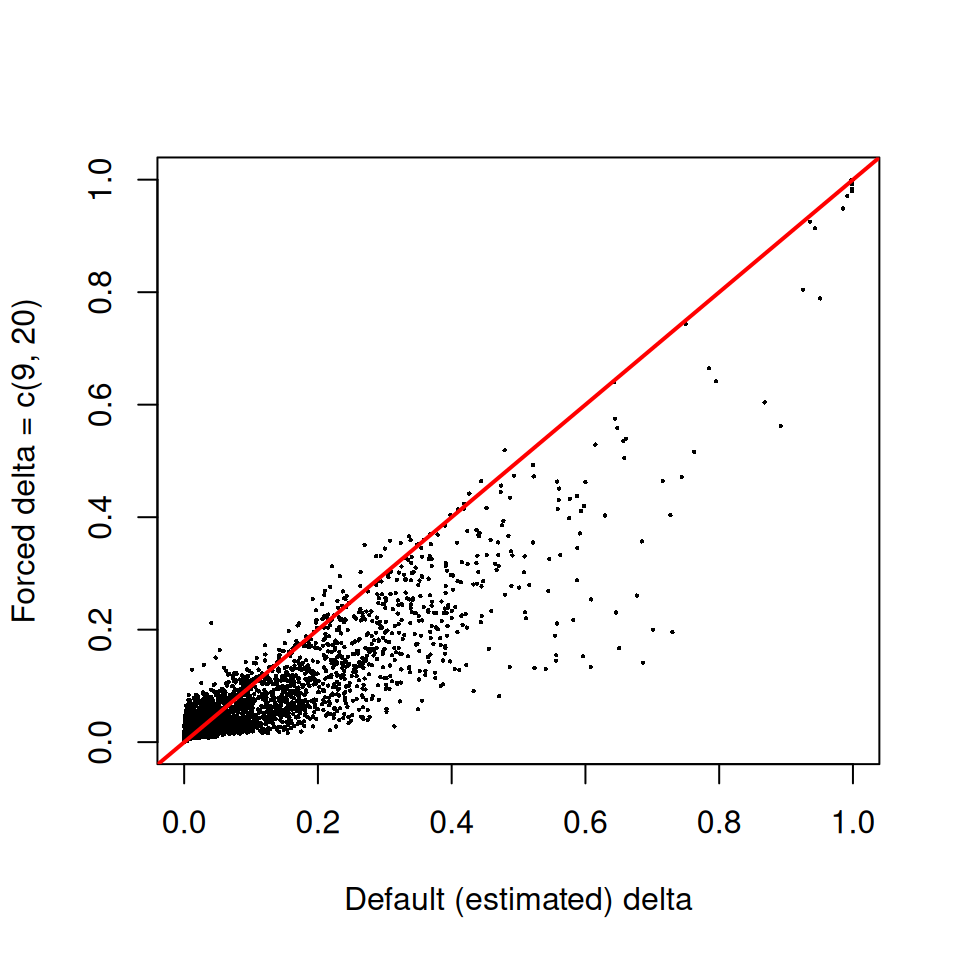
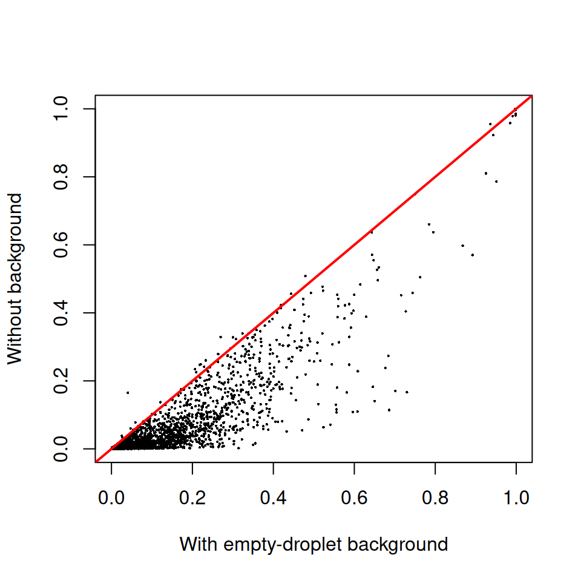

Last updated: 2026-04-27
Checks: 7 0
Knit directory: muse/
This reproducible R Markdown analysis was created with workflowr (version 1.7.2). The Checks tab describes the reproducibility checks that were applied when the results were created. The Past versions tab lists the development history.
Great! Since the R Markdown file has been committed to the Git repository, you know the exact version of the code that produced these results.
Great job! The global environment was empty. Objects defined in the global environment can affect the analysis in your R Markdown file in unknown ways. For reproduciblity it’s best to always run the code in an empty environment.
The command set.seed(20200712) was run prior to running
the code in the R Markdown file. Setting a seed ensures that any results
that rely on randomness, e.g. subsampling or permutations, are
reproducible.
Great job! Recording the operating system, R version, and package versions is critical for reproducibility.
Nice! There were no cached chunks for this analysis, so you can be confident that you successfully produced the results during this run.
Great job! Using relative paths to the files within your workflowr project makes it easier to run your code on other machines.
Great! You are using Git for version control. Tracking code development and connecting the code version to the results is critical for reproducibility.
The results in this page were generated with repository version 3419891. See the Past versions tab to see a history of the changes made to the R Markdown and HTML files.
Note that you need to be careful to ensure that all relevant files for
the analysis have been committed to Git prior to generating the results
(you can use wflow_publish or
wflow_git_commit). workflowr only checks the R Markdown
file, but you know if there are other scripts or data files that it
depends on. Below is the status of the Git repository when the results
were generated:
Ignored files:
Ignored: .Rproj.user/
Ignored: data/1M_neurons_filtered_gene_bc_matrices_h5.h5
Ignored: data/293t/
Ignored: data/293t_3t3_filtered_gene_bc_matrices.tar.gz
Ignored: data/293t_filtered_gene_bc_matrices.tar.gz
Ignored: data/5k_Human_Donor1_PBMC_3p_gem-x_5k_Human_Donor1_PBMC_3p_gem-x_count_sample_filtered_feature_bc_matrix.h5
Ignored: data/5k_Human_Donor2_PBMC_3p_gem-x_5k_Human_Donor2_PBMC_3p_gem-x_count_sample_filtered_feature_bc_matrix.h5
Ignored: data/5k_Human_Donor3_PBMC_3p_gem-x_5k_Human_Donor3_PBMC_3p_gem-x_count_sample_filtered_feature_bc_matrix.h5
Ignored: data/5k_Human_Donor4_PBMC_3p_gem-x_5k_Human_Donor4_PBMC_3p_gem-x_count_sample_filtered_feature_bc_matrix.h5
Ignored: data/97516b79-8d08-46a6-b329-5d0a25b0be98.h5ad
Ignored: data/Parent_SC3v3_Human_Glioblastoma_filtered_feature_bc_matrix.tar.gz
Ignored: data/brain_counts/
Ignored: data/cl.obo
Ignored: data/cl.owl
Ignored: data/jurkat/
Ignored: data/jurkat:293t_50:50_filtered_gene_bc_matrices.tar.gz
Ignored: data/jurkat_293t/
Ignored: data/jurkat_filtered_gene_bc_matrices.tar.gz
Ignored: data/pbmc20k/
Ignored: data/pbmc20k_seurat/
Ignored: data/pbmc3k.csv
Ignored: data/pbmc3k.csv.gz
Ignored: data/pbmc3k.h5ad
Ignored: data/pbmc3k/
Ignored: data/pbmc3k_bpcells_mat/
Ignored: data/pbmc3k_export.mtx
Ignored: data/pbmc3k_matrix.mtx
Ignored: data/pbmc3k_seurat.rds
Ignored: data/pbmc4k_filtered_gene_bc_matrices.tar.gz
Ignored: data/pbmc_1k_v3_filtered_feature_bc_matrix.h5
Ignored: data/pbmc_1k_v3_raw_feature_bc_matrix.h5
Ignored: data/refdata-gex-GRCh38-2020-A.tar.gz
Ignored: data/seurat_1m_neuron.rds
Ignored: data/t_3k_filtered_gene_bc_matrices.tar.gz
Ignored: r_packages_4.5.2/
Untracked files:
Untracked: .claude/
Untracked: CLAUDE.md
Untracked: analysis/.claude/
Untracked: analysis/ambient.Rmd
Untracked: analysis/aucc.Rmd
Untracked: analysis/bimodal.Rmd
Untracked: analysis/bioc.Rmd
Untracked: analysis/bioc_scrnaseq.Rmd
Untracked: analysis/chick_weight.Rmd
Untracked: analysis/likelihood.Rmd
Untracked: analysis/modelling.Rmd
Untracked: analysis/sampleqc.Rmd
Untracked: analysis/wordpress_readability.Rmd
Untracked: bpcells_matrix/
Untracked: data/Caenorhabditis_elegans.WBcel235.113.gtf.gz
Untracked: data/GCF_043380555.1-RS_2024_12_gene_ontology.gaf.gz
Untracked: data/SC3pv3_GEX_Human_PBMC_filtered_feature_bc_matrix.h5
Untracked: data/SC3pv3_GEX_Human_PBMC_raw_feature_bc_matrix.h5
Untracked: data/SeuratObj.rds
Untracked: data/arab.rds
Untracked: data/astronomicalunit.csv
Untracked: data/davetang039sblog.WordPress.2026-02-12.xml
Untracked: data/femaleMiceWeights.csv
Untracked: data/lung_bcell.rds
Untracked: m3/
Untracked: output/soupx_corrected.rds
Untracked: women.json
Unstaged changes:
Modified: analysis/isoform_switch_analyzer.Rmd
Note that any generated files, e.g. HTML, png, CSS, etc., are not included in this status report because it is ok for generated content to have uncommitted changes.
These are the previous versions of the repository in which changes were
made to the R Markdown (analysis/decontx.Rmd) and HTML
(docs/decontx.html) files. If you’ve configured a remote
Git repository (see ?wflow_git_remote), click on the
hyperlinks in the table below to view the files as they were in that
past version.
| File | Version | Author | Date | Message |
|---|---|---|---|---|
| Rmd | 3419891 | Dave Tang | 2026-04-27 | Output correct matrices |
| html | 40330fe | Dave Tang | 2026-04-27 | Build site. |
| Rmd | 4fa07ce | Dave Tang | 2026-04-27 | DecontX |
Droplet-based single-cell RNA-seq protocols, such as those produced by the 10x Genomics Chromium platform, do not actually sequence isolated cells. They sequence droplets. Each droplet ideally contains a single cell, but every droplet — empty or not — also receives a small volume of the input cell suspension, and that suspension carries free-floating mRNA released by cells that lysed before encapsulation. The count matrix that comes out of Cell Ranger for any given cell is therefore a mixture of two things: transcripts that genuinely came from that cell’s transcriptome, and a low-level background of “ambient” transcripts that came from lysed cells in the suspension.
This ambient contamination has a characteristic signature. The genes that dominate the ambient pool are the genes that are most highly expressed in the cells that died most readily during dissociation — typically erythrocytes (releasing haemoglobin transcripts), plasma cells (immunoglobulins), and other fragile populations. These transcripts then appear at low levels in every cell, even in cell types that biologically cannot express them. Downstream this manifests as clusters that look weakly positive for markers they should not express, inflated p-values in differential expression, and misleading marker signatures.
DecontX
(Yang S. et al., Decontamination of ambient RNA in
single-cell RNA-seq with DecontX. Genome Biology 21:57,
2020) is one of several methods for estimating and removing this
contamination. It models the observed expression of each cell as a
mixture of two multinomial distributions: a “native” distribution
representing the cell’s actual transcriptome (taken to resemble the
average profile of its assigned cluster) and a “contamination”
distribution representing the ambient pool (taken to resemble a weighted
combination of the other clusters’ average profiles). A Bayesian
variational EM procedure jointly estimates the mixing proportion
rho (the contamination fraction) for every cell and the
cluster-level expression profiles. The corrected counts assay is
produced by removing the expected contamination contribution from each
cell.
This repository already has a SoupX walk-through on the same PBMC dataset. The two methods solve the same problem but make different assumptions, which is worth understanding before choosing one:
autoEstCont).background argument to anchor the ambient estimate
empirically.In practice the two methods often agree on which genes are most contaminated and produce broadly similar corrections. DecontX is appealing when the empty-droplet population may not represent the full ambient pool — for example when the sample was FACS-sorted before loading, so that the cells most prone to lysis (and most likely to be in the soup) were never present in the chip in the first place.
This notebook reproduces the official
DecontX vignette on the same SC3pv3_GEX_Human_PBMC
dataset that the SoupX notebook uses, so that the two results can be
compared like-for-like. The data files are tracked outside the
repository; download them with script/download_data.sh
before knitting.
decontX provides the model and the helper plotting
functions, SingleCellExperiment is the container we use
throughout, Seurat::Read10X_h5 is the fastest way to read
the 10x HDF5 matrices, celda provides a couple of
UMAP-overlay plotting helpers, and scater gives us
logNormCounts for normalising the counts before plotting
marker expression.
suppressPackageStartupMessages({
library(decontX)
library(SingleCellExperiment)
library(Matrix)
library(Seurat)
library(celda)
library(scater)
library(ggplot2)
})DecontX works with two count matrices in the same way SoupX does:
background argument so that the ambient distribution is
estimated empirically rather than implicitly from the other
clusters.The 10x convenience function Read10X_h5() returns a
sparse matrix with gene symbols as row names and cell barcodes as column
names — exactly the shape DecontX expects.
filtered_counts <- Seurat::Read10X_h5("data/SC3pv3_GEX_Human_PBMC_filtered_feature_bc_matrix.h5")
raw_counts <- Seurat::Read10X_h5("data/SC3pv3_GEX_Human_PBMC_raw_feature_bc_matrix.h5")
dim(filtered_counts)[1] 36601 5140dim(raw_counts)[1] 36601 909706The raw matrix has the same number of genes (rows) as the filtered matrix but many more barcodes (columns), because it includes all the empty droplets that the filtered matrix excludes.
DecontX accepts either a sparse matrix or a
SingleCellExperiment (SCE) object. The SCE workflow is the
more useful one because the function adds its outputs (the contamination
estimate, the cluster labels, the UMAP, and the decontaminated counts
assay) back onto the same object, keeping everything in one place. We
wrap the filtered matrix in an SCE and convert the counts to
dgCMatrix, which is the sparse format DecontX prefers.
sce <- SingleCellExperiment(assays = list(counts = filtered_counts))
sce.raw <- SingleCellExperiment(assays = list(counts = raw_counts))
counts(sce) <- as(counts(sce), "CsparseMatrix")
counts(sce.raw) <- as(counts(sce.raw), "CsparseMatrix")
sceclass: SingleCellExperiment
dim: 36601 5140
metadata(0):
assays(1): counts
rownames(36601): MIR1302-2HG FAM138A ... AC007325.4 AC007325.2
rowData names(0):
colnames(5140): AAACCCAGTCGGCCTA-1 AAACCCATCAGATGCT-1 ...
TTTGTTGTCGAAGTGG-1 TTTGTTGTCGCATAGT-1
colData names(0):
reducedDimNames(0):
mainExpName: NULL
altExpNames(0):We will run decontX() with the raw matrix as
background. This tells DecontX to estimate the ambient
distribution from the empty droplets in the raw matrix rather than from
the other clusters in the filtered matrix. If any barcodes appear in
both the filtered and raw matrices, DecontX automatically removes them
from the background estimate so that real cells are never counted as
ambient.
If you do not have a raw matrix available, calling
decontX(sce) without background is fine — the
model just falls back to estimating the contamination distribution from
the other clusters. We will compare the two below.
set.seed(1984)
sce <- decontX(sce, background = sce.raw)DecontX adds several things to the SCE:
colData(sce)$decontX_contamination — the per-cell
contamination fraction, between 0 and 1.colData(sce)$decontX_clusters — the heuristic cluster
label DecontX assigned to each cell. By default DecontX runs its own
quick clustering pass (via celda) that tends to identify
broad cell types rather than fine subpopulations. Custom labels can be
supplied via the z argument if you already have an
annotation.reducedDim(sce, "decontX_UMAP") — a 2D UMAP embedding
of the cells, used for the diagnostic plots below.decontXcounts(sce) — the decontaminated count matrix,
with the expected ambient contribution removed from each cell.metadata(sce)$decontX$estimates — the fitted
parameters, including the Dirichlet concentration delta
discussed below.A first look at the contamination distribution:
summary(sce$decontX_contamination) Min. 1st Qu. Median Mean 3rd Qu. Max.
2.368e-05 6.639e-03 1.614e-02 6.977e-02 7.397e-02 9.995e-01 For PBMC datasets a median contamination fraction in the range 5–15% is typical. Individual cells can be much higher; cells that were on the brink of lysing themselves often look very contaminated.
The clustering is “broad” by design — DecontX wants enough resolution to separate things like T-cells from monocytes from B-cells, but not so much that closely related subtypes are split apart, because splitting subtypes makes the contamination model harder to identify.
umap <- reducedDim(sce, "decontX_UMAP")
plotDimReduceCluster(
x = sce$decontX_clusters,
dim1 = umap[, 1],
dim2 = umap[, 2]
)Warning: `aes_string()` was deprecated in ggplot2 3.0.0.
ℹ Please use tidy evaluation idioms with `aes()`.
ℹ See also `vignette("ggplot2-in-packages")` for more information.
ℹ The deprecated feature was likely used in the celda package.
Please report the issue at <https://github.com/campbio/celda/issues>.
This warning is displayed once per session.
Call `lifecycle::last_lifecycle_warnings()` to see where this warning was
generated.
| Version | Author | Date |
|---|---|---|
| 40330fe | Dave Tang | 2026-04-27 |
Overlaying the contamination fraction on the UMAP is the single most useful diagnostic plot. Clusters that are uniformly high-contamination usually correspond to cell types that are intrinsically lower in total mRNA (and therefore swamped by a fixed amount of soup); occasional individual hot spots are usually dying cells.
plotDecontXContamination(sce)
| Version | Author | Date |
|---|---|---|
| 40330fe | Dave Tang | 2026-04-27 |
To interpret the cluster labels we need to know what cell type each cluster corresponds to. We log-normalise the original counts and overlay the canonical PBMC markers:
CD3D, CD3ECD79A, CD79B,
MS4A1LYZ, S100A8,
S100A9GNLYPPBPsce <- logNormCounts(sce)plotDimReduceFeature(
as.matrix(logcounts(sce)),
dim1 = umap[, 1],
dim2 = umap[, 2],
features = c("CD3D", "CD3E", "GNLY",
"LYZ", "S100A8", "S100A9",
"CD79A", "CD79B", "MS4A1"),
exactMatch = TRUE
)Warning in asMethod(object): sparse->dense coercion: allocating vector of size
1.4 GiB
| Version | Author | Date |
|---|---|---|
| 40330fe | Dave Tang | 2026-04-27 |
To use the marker-percentage and violin plots below we need a
groupClusters list that tells DecontX which cluster ID
corresponds to which cell type. The vignette hard-codes this list
because the cluster IDs are stable on the pbmc4k example, but the IDs
depend on the random seed and on the data, so we work them out
programmatically: for each cell-type marker set, find the cluster with
the highest mean log-normalised expression of those markers.
identify_cluster <- function(sce, marker_genes, group = sce$decontX_clusters) {
marker_genes <- intersect(marker_genes, rownames(sce))
expr_per_cell <- Matrix::colMeans(logcounts(sce)[marker_genes, , drop = FALSE])
mean_per_cluster <- tapply(expr_per_cell, group, mean)
as.integer(names(which.max(mean_per_cluster)))
}
markers <- list(
Tcell_Markers = c("CD3E", "CD3D"),
Bcell_Markers = c("CD79A", "CD79B", "MS4A1"),
Monocyte_Markers = c("S100A8", "S100A9", "LYZ"),
NKcell_Markers = "GNLY"
)
cellTypeMappings <- list(
Tcells = identify_cluster(sce, markers$Tcell_Markers),
Bcells = identify_cluster(sce, markers$Bcell_Markers),
Monocytes = identify_cluster(sce, markers$Monocyte_Markers),
NKcells = identify_cluster(sce, markers$NKcell_Markers)
)
cellTypeMappings$Tcells
[1] 2
$Bcells
[1] 3
$Monocytes
[1] 8
$NKcells
[1] 4If the same cluster is being picked for two different cell types then
the broad clustering has lumped them together; you would either need to
re-run with finer clustering (via z) or merge the cell-type
labels (e.g. group T and NK cells together) to interpret the diagnostics
that follow.
A useful summary of contamination is the percentage of cells in each cluster that have at least one count of each marker. Markers should be detected in nearly all cells of their own cell type, and in close to zero cells of the other cell types. Any non-trivial detection in the wrong cell type is a candidate for soup contamination.
plotDecontXMarkerPercentage(
sce,
markers = markers,
groupClusters = cellTypeMappings,
assayName = "counts"
)
| Version | Author | Date |
|---|---|---|
| 40330fe | Dave Tang | 2026-04-27 |
After decontamination, the off-diagonal bars (e.g. monocyte markers detected in T cells) should drop substantially, while the on-diagonal bars (e.g. monocyte markers detected in monocytes) should be largely unchanged.
plotDecontXMarkerPercentage(
sce,
markers = markers,
groupClusters = cellTypeMappings,
assayName = "decontXcounts"
)
| Version | Author | Date |
|---|---|---|
| 40330fe | Dave Tang | 2026-04-27 |
Listing both assays side-by-side makes the before/after comparison
easier to read. This only works on SingleCellExperiment
objects (because we need a single object holding both assays).
plotDecontXMarkerPercentage(
sce,
markers = markers,
groupClusters = cellTypeMappings,
assayName = c("counts", "decontXcounts")
)
| Version | Author | Date |
|---|---|---|
| 40330fe | Dave Tang | 2026-04-27 |
The marker-percentage barplots show whether a gene is detected. The violin plots show how much of it is detected. We focus on monocyte markers — they are the most consistently soup-prone in PBMC preps — and look at how the distribution shifts across cell types after decontamination.
plotDecontXMarkerExpression(
sce,
markers = markers[["Monocyte_Markers"]],
groupClusters = cellTypeMappings,
ncol = 3
)
| Version | Author | Date |
|---|---|---|
| 40330fe | Dave Tang | 2026-04-27 |
We expect to see the bulk of the off-target distributions (monocyte markers in T-cells, B-cells, NK-cells) collapse toward zero after decontamination, while the on-target distribution (monocyte markers in monocytes) is largely preserved.
The same plot can be drawn on log-normalised counts by passing both the original and decontaminated log-counts as separate assays:
sce <- logNormCounts(
sce,
exprs_values = "decontXcounts",
name = "decontXlogcounts"
)
plotDecontXMarkerExpression(
sce,
markers = markers[["Monocyte_Markers"]],
groupClusters = cellTypeMappings,
ncol = 3,
assayName = c("logcounts", "decontXlogcounts")
)
| Version | Author | Date |
|---|---|---|
| 40330fe | Dave Tang | 2026-04-27 |
DecontX places a Dirichlet prior with concentration parameter
delta on the proportions of native and contamination counts
in each cell. delta is a length-2 numeric: the first
element is the prior pseudocount for native expression, the second is
the prior pseudocount for contamination. By default
estimateDelta = TRUE and delta is updated at
each iteration; the supplied value is only used to seed the
optimisation. The fitted value is stored in the metadata:
metadata(sce)$decontX$estimates$all_cells$delta[1] 3.124520 0.363168If you have prior knowledge that a particular dataset is heavily
contaminated (for example because you can see haemoglobin transcripts
everywhere), you can fix delta and bias the prior toward a
higher contamination fraction. The trade-off is that decontamination
becomes more aggressive and may start to remove genuine native
expression as well — so this is a knob to be turned with care.
set.seed(1984)
sce.delta <- decontX(sce, delta = c(9, 20), estimateDelta = FALSE)plot(
sce$decontX_contamination,
sce.delta$decontX_contamination,
xlab = "Default (estimated) delta",
ylab = "Forced delta = c(9, 20)",
pch = 16, cex = 0.3
)
abline(0, 1, col = "red", lwd = 2)
| Version | Author | Date |
|---|---|---|
| 40330fe | Dave Tang | 2026-04-27 |
Points above the red y = x line are cells where the
forced prior produced a higher contamination estimate than the
data-driven default. The general shape of the cloud tells you how
sensitive the contamination estimates are to the prior on this
particular dataset.
Haemoglobin genes (HBB, HBA1,
HBA2) are the canonical contamination signal in PBMC preps
— released by lysed red blood cells, present in essentially every
droplet, and not genuinely expressed by any PBMC type. A
successful decontamination should remove most of the haemoglobin counts.
We tabulate the global before/after totals across all cells:
hb_genes <- intersect(c("HBB", "HBA1", "HBA2"), rownames(sce))
data.frame(
gene = hb_genes,
before = Matrix::rowSums(counts(sce)[hb_genes, ]),
after = Matrix::rowSums(decontXcounts(sce)[hb_genes, ]),
removed = Matrix::rowSums(counts(sce)[hb_genes, ]) -
Matrix::rowSums(decontXcounts(sce)[hb_genes, ])
) gene before after removed
HBB HBB 1502534 1421097.4 81436.61
HBA1 HBA1 485458 461128.2 24329.84
HBA2 HBA2 832936 790524.2 42411.80A good correction should remove the large majority of these counts.
The decontaminated counts are floating-point because the model
removes a fractional expected contribution rather than discrete UMIs.
Most downstream tools — including Seurat — accept non-integer counts
without complaint. If you have a tool that requires strict integers,
round() the matrix before handing it over.
To continue with Seurat:
srat_clean <- CreateSeuratObject(counts = round(decontXcounts(sce)))
srat_cleanAn object of class Seurat
36601 features across 5140 samples within 1 assay
Active assay: RNA (36601 features, 0 variable features)
1 layer present: countsYou would then re-run normalisation, feature selection, dimension reduction, and clustering on the cleaned matrix. The broad cluster structure on PBMC data is usually unchanged after decontamination, but contamination-driven artefacts — clusters that appeared to express haemoglobin or monocyte markers purely because of soup — are substantially reduced, and downstream differential expression becomes cleaner.
We save the decontaminated counts together with the per-cell contamination estimate and cluster label so that another notebook can compare these results to other ambient-RNA correction methods on the same dataset. See ambient.html for the side-by-side comparison with SoupX.
saveRDS(
list(
counts = decontXcounts(sce),
meta = data.frame(
barcode = colnames(sce),
rho = sce$decontX_contamination,
cluster = sce$decontX_clusters,
row.names = colnames(sce)
)
),
"output/decontx_corrected.rds"
)For comparison, here is what DecontX does when no
background is supplied. The contamination distribution for
each cell is then estimated as a weighted combination of the
other clusters’ profiles, rather than from empty droplets.
set.seed(1984)
sce.nobg <- SingleCellExperiment(assays = list(counts = filtered_counts))
counts(sce.nobg) <- as(counts(sce.nobg), "CsparseMatrix")
sce.nobg <- decontX(sce.nobg)plot(
sce$decontX_contamination,
sce.nobg$decontX_contamination,
xlab = "With empty-droplet background",
ylab = "Without background",
pch = 16, cex = 0.3
)
abline(0, 1, col = "red", lwd = 2)
| Version | Author | Date |
|---|---|---|
| 40330fe | Dave Tang | 2026-04-27 |
If the two estimates lie close to the y = x line, the
empty-droplet background is not adding much information beyond what the
inter-cluster comparison already provides — which is the common case for
unsorted PBMC samples where the cells in the chip are a faithful sample
of the cells that contributed to the ambient pool.
sessionInfo()R version 4.5.2 (2025-10-31)
Platform: x86_64-pc-linux-gnu
Running under: Ubuntu 24.04.4 LTS
Matrix products: default
BLAS: /usr/lib/x86_64-linux-gnu/openblas-pthread/libblas.so.3
LAPACK: /usr/lib/x86_64-linux-gnu/openblas-pthread/libopenblasp-r0.3.26.so; LAPACK version 3.12.0
locale:
[1] LC_CTYPE=en_US.UTF-8 LC_NUMERIC=C
[3] LC_TIME=en_US.UTF-8 LC_COLLATE=en_US.UTF-8
[5] LC_MONETARY=en_US.UTF-8 LC_MESSAGES=en_US.UTF-8
[7] LC_PAPER=en_US.UTF-8 LC_NAME=C
[9] LC_ADDRESS=C LC_TELEPHONE=C
[11] LC_MEASUREMENT=en_US.UTF-8 LC_IDENTIFICATION=C
time zone: Etc/UTC
tzcode source: system (glibc)
attached base packages:
[1] stats4 stats graphics grDevices utils datasets methods
[8] base
other attached packages:
[1] scater_1.38.1 ggplot2_4.0.3
[3] scuttle_1.20.0 celda_1.26.0
[5] Seurat_5.5.0 SeuratObject_5.4.0
[7] sp_2.2-1 Matrix_1.7-4
[9] SingleCellExperiment_1.32.0 SummarizedExperiment_1.40.0
[11] Biobase_2.70.0 GenomicRanges_1.62.1
[13] Seqinfo_1.0.0 IRanges_2.44.0
[15] S4Vectors_0.48.1 BiocGenerics_0.56.0
[17] generics_0.1.4 MatrixGenerics_1.22.0
[19] matrixStats_1.5.0 decontX_1.8.0
[21] workflowr_1.7.2
loaded via a namespace (and not attached):
[1] RcppAnnoy_0.0.23 splines_4.5.2 later_1.4.8
[4] tibble_3.3.1 polyclip_1.10-7 pROC_1.19.0.1
[7] fastDummies_1.7.6 lifecycle_1.0.5 doParallel_1.0.17
[10] rprojroot_2.1.1 StanHeaders_2.32.10 hdf5r_1.3.12
[13] globals_0.19.1 processx_3.9.0 lattice_0.22-7
[16] MASS_7.3-65 dendextend_1.19.1 magrittr_2.0.5
[19] plotly_4.12.0 sass_0.4.10 rmarkdown_2.31
[22] jquerylib_0.1.4 yaml_2.3.12 httpuv_1.6.17
[25] otel_0.2.0 sctransform_0.4.3 spam_2.11-3
[28] pkgbuild_1.4.8 spatstat.sparse_3.1-0 reticulate_1.46.0
[31] cowplot_1.2.0 pbapply_1.7-4 RColorBrewer_1.1-3
[34] abind_1.4-8 Rtsne_0.17 purrr_1.2.2
[37] WriteXLS_6.8.0 git2r_0.36.2 ggrepel_0.9.8
[40] inline_0.3.21 irlba_2.3.7 listenv_0.10.1
[43] spatstat.utils_3.2-2 goftest_1.2-3 RSpectra_0.16-2
[46] spatstat.random_3.4-5 fitdistrplus_1.2-6 parallelly_1.47.0
[49] codetools_0.2-20 DelayedArray_0.36.1 tidyselect_1.2.1
[52] farver_2.1.2 ScaledMatrix_1.18.0 viridis_0.6.5
[55] spatstat.explore_3.8-0 jsonlite_2.0.0 BiocNeighbors_2.4.0
[58] progressr_0.19.0 ggridges_0.5.7 survival_3.8-3
[61] iterators_1.0.14 foreach_1.5.2 dbscan_1.2.4
[64] tools_4.5.2 ica_1.0-3 Rcpp_1.1.1-1.1
[67] glue_1.8.1 gridExtra_2.3 SparseArray_1.10.10
[70] xfun_0.57 dplyr_1.2.1 loo_2.9.0
[73] withr_3.0.2 combinat_0.0-8 fastmap_1.2.0
[76] MCMCprecision_0.4.2 rsvd_1.0.5 callr_3.7.6
[79] digest_0.6.39 R6_2.6.1 mime_0.13
[82] scattermore_1.2 tensor_1.5.1 spatstat.data_3.1-9
[85] tidyr_1.3.2 data.table_1.18.2.1 httr_1.4.8
[88] htmlwidgets_1.6.4 S4Arrays_1.10.1 whisker_0.4.1
[91] uwot_0.2.4 pkgconfig_2.0.3 gtable_0.3.6
[94] lmtest_0.9-40 S7_0.2.2 XVector_0.50.0
[97] htmltools_0.5.9 dotCall64_1.2 scales_1.4.0
[100] png_0.1-9 spatstat.univar_3.1-7 ggdendro_0.2.0
[103] enrichR_3.4 knitr_1.51 rstudioapi_0.18.0
[106] rjson_0.2.23 reshape2_1.4.5 curl_7.1.0
[109] nlme_3.1-168 cachem_1.1.0 zoo_1.8-15
[112] stringr_1.6.0 KernSmooth_2.23-26 vipor_0.4.7
[115] parallel_4.5.2 miniUI_0.1.2 pillar_1.11.1
[118] grid_4.5.2 vctrs_0.7.3 RANN_2.6.2
[121] promises_1.5.0 BiocSingular_1.26.1 beachmat_2.26.0
[124] xtable_1.8-8 cluster_2.1.8.1 beeswarm_0.4.0
[127] evaluate_1.0.5 cli_3.6.6 compiler_4.5.2
[130] rlang_1.2.0 rstantools_2.6.0 future.apply_1.20.2
[133] labeling_0.4.3 ps_1.9.3 ggbeeswarm_0.7.3
[136] getPass_0.2-4 plyr_1.8.9 fs_2.1.0
[139] stringi_1.8.7 rstan_2.32.7 BiocParallel_1.44.0
[142] viridisLite_0.4.3 deldir_2.0-4 QuickJSR_1.9.2
[145] lazyeval_0.2.3 spatstat.geom_3.7-3 RcppHNSW_0.6.0
[148] RcppEigen_0.3.4.0.2 patchwork_1.3.2 bit64_4.8.0
[151] future_1.70.0 shiny_1.13.0 ROCR_1.0-12
[154] igraph_2.3.0 RcppParallel_5.1.11-2 bslib_0.10.0
[157] bit_4.6.0
sessionInfo()R version 4.5.2 (2025-10-31)
Platform: x86_64-pc-linux-gnu
Running under: Ubuntu 24.04.4 LTS
Matrix products: default
BLAS: /usr/lib/x86_64-linux-gnu/openblas-pthread/libblas.so.3
LAPACK: /usr/lib/x86_64-linux-gnu/openblas-pthread/libopenblasp-r0.3.26.so; LAPACK version 3.12.0
locale:
[1] LC_CTYPE=en_US.UTF-8 LC_NUMERIC=C
[3] LC_TIME=en_US.UTF-8 LC_COLLATE=en_US.UTF-8
[5] LC_MONETARY=en_US.UTF-8 LC_MESSAGES=en_US.UTF-8
[7] LC_PAPER=en_US.UTF-8 LC_NAME=C
[9] LC_ADDRESS=C LC_TELEPHONE=C
[11] LC_MEASUREMENT=en_US.UTF-8 LC_IDENTIFICATION=C
time zone: Etc/UTC
tzcode source: system (glibc)
attached base packages:
[1] stats4 stats graphics grDevices utils datasets methods
[8] base
other attached packages:
[1] scater_1.38.1 ggplot2_4.0.3
[3] scuttle_1.20.0 celda_1.26.0
[5] Seurat_5.5.0 SeuratObject_5.4.0
[7] sp_2.2-1 Matrix_1.7-4
[9] SingleCellExperiment_1.32.0 SummarizedExperiment_1.40.0
[11] Biobase_2.70.0 GenomicRanges_1.62.1
[13] Seqinfo_1.0.0 IRanges_2.44.0
[15] S4Vectors_0.48.1 BiocGenerics_0.56.0
[17] generics_0.1.4 MatrixGenerics_1.22.0
[19] matrixStats_1.5.0 decontX_1.8.0
[21] workflowr_1.7.2
loaded via a namespace (and not attached):
[1] RcppAnnoy_0.0.23 splines_4.5.2 later_1.4.8
[4] tibble_3.3.1 polyclip_1.10-7 pROC_1.19.0.1
[7] fastDummies_1.7.6 lifecycle_1.0.5 doParallel_1.0.17
[10] rprojroot_2.1.1 StanHeaders_2.32.10 hdf5r_1.3.12
[13] globals_0.19.1 processx_3.9.0 lattice_0.22-7
[16] MASS_7.3-65 dendextend_1.19.1 magrittr_2.0.5
[19] plotly_4.12.0 sass_0.4.10 rmarkdown_2.31
[22] jquerylib_0.1.4 yaml_2.3.12 httpuv_1.6.17
[25] otel_0.2.0 sctransform_0.4.3 spam_2.11-3
[28] pkgbuild_1.4.8 spatstat.sparse_3.1-0 reticulate_1.46.0
[31] cowplot_1.2.0 pbapply_1.7-4 RColorBrewer_1.1-3
[34] abind_1.4-8 Rtsne_0.17 purrr_1.2.2
[37] WriteXLS_6.8.0 git2r_0.36.2 ggrepel_0.9.8
[40] inline_0.3.21 irlba_2.3.7 listenv_0.10.1
[43] spatstat.utils_3.2-2 goftest_1.2-3 RSpectra_0.16-2
[46] spatstat.random_3.4-5 fitdistrplus_1.2-6 parallelly_1.47.0
[49] codetools_0.2-20 DelayedArray_0.36.1 tidyselect_1.2.1
[52] farver_2.1.2 ScaledMatrix_1.18.0 viridis_0.6.5
[55] spatstat.explore_3.8-0 jsonlite_2.0.0 BiocNeighbors_2.4.0
[58] progressr_0.19.0 ggridges_0.5.7 survival_3.8-3
[61] iterators_1.0.14 foreach_1.5.2 dbscan_1.2.4
[64] tools_4.5.2 ica_1.0-3 Rcpp_1.1.1-1.1
[67] glue_1.8.1 gridExtra_2.3 SparseArray_1.10.10
[70] xfun_0.57 dplyr_1.2.1 loo_2.9.0
[73] withr_3.0.2 combinat_0.0-8 fastmap_1.2.0
[76] MCMCprecision_0.4.2 rsvd_1.0.5 callr_3.7.6
[79] digest_0.6.39 R6_2.6.1 mime_0.13
[82] scattermore_1.2 tensor_1.5.1 spatstat.data_3.1-9
[85] tidyr_1.3.2 data.table_1.18.2.1 httr_1.4.8
[88] htmlwidgets_1.6.4 S4Arrays_1.10.1 whisker_0.4.1
[91] uwot_0.2.4 pkgconfig_2.0.3 gtable_0.3.6
[94] lmtest_0.9-40 S7_0.2.2 XVector_0.50.0
[97] htmltools_0.5.9 dotCall64_1.2 scales_1.4.0
[100] png_0.1-9 spatstat.univar_3.1-7 ggdendro_0.2.0
[103] enrichR_3.4 knitr_1.51 rstudioapi_0.18.0
[106] rjson_0.2.23 reshape2_1.4.5 curl_7.1.0
[109] nlme_3.1-168 cachem_1.1.0 zoo_1.8-15
[112] stringr_1.6.0 KernSmooth_2.23-26 vipor_0.4.7
[115] parallel_4.5.2 miniUI_0.1.2 pillar_1.11.1
[118] grid_4.5.2 vctrs_0.7.3 RANN_2.6.2
[121] promises_1.5.0 BiocSingular_1.26.1 beachmat_2.26.0
[124] xtable_1.8-8 cluster_2.1.8.1 beeswarm_0.4.0
[127] evaluate_1.0.5 cli_3.6.6 compiler_4.5.2
[130] rlang_1.2.0 rstantools_2.6.0 future.apply_1.20.2
[133] labeling_0.4.3 ps_1.9.3 ggbeeswarm_0.7.3
[136] getPass_0.2-4 plyr_1.8.9 fs_2.1.0
[139] stringi_1.8.7 rstan_2.32.7 BiocParallel_1.44.0
[142] viridisLite_0.4.3 deldir_2.0-4 QuickJSR_1.9.2
[145] lazyeval_0.2.3 spatstat.geom_3.7-3 RcppHNSW_0.6.0
[148] RcppEigen_0.3.4.0.2 patchwork_1.3.2 bit64_4.8.0
[151] future_1.70.0 shiny_1.13.0 ROCR_1.0-12
[154] igraph_2.3.0 RcppParallel_5.1.11-2 bslib_0.10.0
[157] bit_4.6.0